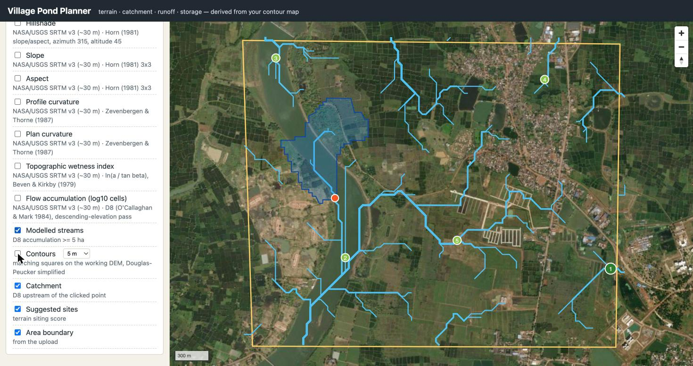

Village pond planning · terrain-first
From a contour map to a costed pond — with the reasoning shown.
Upload a KML/KMZ of a village. Get the terrain, the streams, ranked pond sites, the catchment of any point you click, 45 years of rainfall, runoff by three methods and a pond design with fill reliability. Every number carries its unit and an honest uncertainty band.
Validated against an independent modelNothing hard-coded to one mapWorks offline after first load

Catchment at the suggested site
38.3ha
±26 % · D8 · snapped to the channel